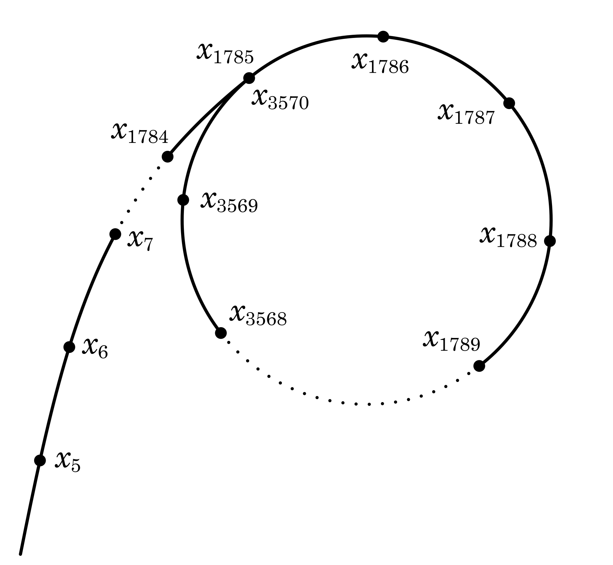

RSA: Attack and Defense (II)
This article first supplements two specific integer factorization methods - Fermat's factorization method and Pollard's rho algorithm, explaining the essence of their algorithms and applicable scenarios, and provides a Python reference implementation. Next, it analyzes in detail a classic low private exponent attack - Wiener's attack, elaborating on the mathematical basis, the attack principle, and the attack procedure, with a complete Python program. The article also cites the latest research paper proposing a new upper bound for the private exponent when Wiener's attack is successful and verifies the correctness of this limit with a test case.
Previous article: RSA: Attack and Defense (I)
Integer Factorization (Supplementary)
Even if the RSA modulus \(N\) is a very big number (with sufficient bits), problems can still arise if the gap between the prime factors \(p\) and \(q\) is too small or too large. In such cases, there are specific factorization algorithms that can effectively retrieve p and q from the public modulus N.
Fermat's Factorization Method
When the prime factors \(p\) and \(q\) are very close, Fermat's factorization method can factorize the modulus N in a very short time. Fermat's factorization method is named after the French mathematician Pierre de Fermat. Its base point is that every odd integer can be represented as the difference between two squares, i.e. \[N=a^2-b^2\] Applying algebraic factorization on the right side yields \((a+b)(a-b)\). If neither factor is one, it is a nontrivial factor of \(N\). For the RSA modulus \(N\), assuming \(p>q\), correspondingly \(p=a+b\) and \(q=a-b\). In turn, it can be deduced that \[N=\left({\frac {p+q}{2}}\right)^{2}-\left({\frac {p-q}{2}}\right)^{2}\] The idea of Fermat's factorization method is to start from \(\lceil{\sqrt N}\rceil\) and try successive values of a, then verify if \(a^{2}-N=b^{2}\). If it is true, the two nontrivial factors \(p\) and \(q\) are found. The number of steps required by this method is approximately \[{\frac{p+q}{2}}-{\sqrt N}=\frac{({\sqrt p}-{\sqrt q})^{2}}{2}=\frac{({\sqrt N}-q)^{2}}{2q}\] In general, Fermat's factorization method is not much better than trial division. In the worst case, it may be slower. However, when the difference between \(p\) and \(q\) is not large, and \(q\) is very close to \(\sqrt N\), the number of steps becomes very small. In the extreme case, if the difference between \(q\) and \(\sqrt N\) is less than \({\left(4N\right)}^{\frac 1 4}\), this method only takes one step to finish.
Below is a Python implementation of Fermat's factorization method, and an example of applying it to factorize the RSA modulus N:
1 | import gmpy2 |
The FermatFactor() function defined at the beginning of the program implements the Fermat factorization method. It calls three library functions of gmpy2: isqrt() to find the square root of an integer, square() to execute the squaring operation, and is_square() to verify if the input is a square number. Two large prime numbers \(p\) and \(q\) of 154 decimal digits each are defined later, and multiplying them gives \(N\). Then \(N\) is fed into the FermatFactor() function and the program starts timing. When the function returns, it prints the elapsed time and confirms the factorization.
1 | N = 55089599753625499150129246679078411260946554356961748980861372828434789664694269460953507615455541204658984798121874916511031276020889949113155608279765385693784204971246654484161179832345357692487854383961212865469152326807704510472371156179457167612793412416133943976901478047318514990960333355366785001217 |
As can be seen, in less than half a minute, this large number of 308 decimal digits (about 1024 bits) was successfully factorized! Going back and examining \(p\) and \(q\), one can see that the first 71 digits of these two large prime numbers of 154 decimal digits are exactly the same. This is exactly the scenario in which the Fermat factorization method exerts its power. If you simply modify the FermatFactor() function to save the starting \(a\) value and compare it to the value at the end of the loop, you get a loop count of 60613989. With such a small number value, it's no wonder that the factorization is done so quickly.
Therefore, the choice of the large prime numbers \(p\) and \(q\) must not only be random but also be far enough apart. After obtaining two large prime numbers, the difference between them shall be checked. If it is too small, regeneration is required to prevent attackers from using Fermat's factorization method to crack it.
Pollard's Rho Algorithm
On the opposite end, if the gap between the large prime factors \(p\) and \(q\) is too large, they may be cracked by Pollard's rho algorithm. This algorithm was invented by British mathematician John Pollard1 in 1975. It requires only a small amount of storage space, and its expected running time is proportional to the square root of the smallest prime factor of the composite number being factorized.
The core idea of Pollard's rho algorithm is to use the collision pattern of traversal sequences to search for factors, and its stochastic and recursive nature allows it to factorize integers efficiently in relatively low complexity. First, for \(N=pq\), assume that \(p\) is the smaller nontrivial factor. The algorithm defines a polynomial modulo \(N\) \[f(x)=(x^{2}+c){\pmod N}\] A pseudorandom sequence can be generated by making recursive calls with this polynomial, and the sequence generation formula is \(x_{n+1}=f(x_n)\). For example, given an initial value of \(x_0=2\) and a constant \(c=1\), it follows that \[\begin{align} x_1&=f(2)=5\\ x_2&=f(x_1)=f(f(2))=26\\ x_3&=f(x_2)=f(f(f(2)))=677\\ \end{align}\] For two numbers \(x_i\) and \(x_j\) in the generated sequence, \(|x_i-x_j|\) must be a multiple of \(p\) if \(x_i\neq x_j\) and \(x_i\equiv x_j{\pmod p}\). In this case, calculating \(\gcd(|x_i-x_j|,N)\) results in \(p\). Based on the Birthday Paradox, in the worst case, it is expected that after generating about \(\sqrt p\) numbers, there will be two numbers that are the same under the modulus \(p\), thus successfully factorizing \(N\). However, the time complexity of performing pairwise comparisons is still unsatisfactory. In addition, storing so many numbers is also troublesome when N is large.
How to solve these problems? This is where the ingenuity of Pollard's rho algorithm lies. Pollard found that the sequence generated by this pseudorandom number generator has two properties:
- Since each number depends only on the value that precedes it, and the numbers generated under the modular operation are finite, sooner or later it will enter a cycle. As shown below, the resulting sequence will eventually form a directed graph similar in shape to the Greek letter \(\rho\), from which the algorithm takes its name. 
- When \(|x_i-x_j| \equiv 0 \pmod p\), there must be \[|f(x_i)-f(x_j)|=|{x_i}^2-{x_j}^2|=|x_i+x_j|\cdot|x_i-x_j|\equiv 0 \pmod p\] This shows that if two numbers in the sequence satisfy a certain condition under modulus operation, all equally spaced pairs of numbers satisfy the same condition.
Insightful of these two properties, Pollard utilizes Floyd's cycle-finding algorithm (also known as the tortoise and hare algorithm) to set up the fast and slow nodes \(x_h\) and \(x_t\). Starting from the same initial value \(x_0\), the slow node \(x_t\) moves to the next node in the sequence every step, while the fast node \(x_h\) moves forward by two nodes at a time, i.e. \[\begin{align} x_t&=f(x_t)\\ x_h&=f(f(x_h))\\ \end{align}\] After that, calculate \(\gcd(|x_h-x_t|,N)\), and the result that is greater than 1 and less than \(N\) is \(p\), otherwise continue with the same steps. With this design, since each move is equivalent to checking a new node spacing, pairwise comparisons are unnecessary. If not found, eventually the fast and slow nodes will meet on the cycle, at which time the result of finding the greatest common divisor is \(N\). The algorithm's recommendation at this point is to exit and regenerate the pseudorandom number sequence with a different initial value or constant \(c\) and try again.
This is the classic Pollard's rho algorithm. Its time complexity is \(𝑂(\sqrt p\log N)\) (\(\log\) comes from the required \(\gcd\) operations). For RSA modulus \(N\), obviously \(p\leq \sqrt N\), so the upper bound on the time complexity can be written as \(𝑂(N^{\frac 1 4}\log N)\). The time complexity expression for Pollard's rho algorithm indicates that the smaller the minimum prime factor of the composite number being factorized, the faster the factorization is expected to be. An excessively small \(p\) is extremely unsafe.
Programming Pollard's rho algorithm is not difficult. The following Python code shows a function implementation of the algorithm, PollardRhoFactor(), and some test cases
1 | import gmpy2 |
The function PollardRhoFactor() accepts three arguments: n is the composite number to be factorized, seed is the initial value of the pseudorandom sequence, and c is the constant value in the generating polynomial. The function internally uses two while to form a double loop: inside the outer loop defines the generating polynomial f and the fast and slow nodes h and t, while the node moving steps and the greatest common divisor operation are implemented in the inner loop. The inner loop ends only if the greatest common divisor d is not 1. At this point, if d is not equal to n, the function returns the non-trivial factor d. Otherwise, d equals n, meaning the fast and slow nodes have met on the cycle. In this situation, the code in the outer loop resets seed to the value of the fast node and increments c, thus restarting a new round of search.
Running the above code on a MacBook Pro (2019), the output is as follows
1 | N P Elapsed Time (s) |
This result proves the effectiveness of Pollard's rho algorithm. In particular, for the last test, the input to the function was the Fermat number \(F_8\) (defined as \(F_{n}=2^{2^{n}}+1\), where \(n\) is a non-negative integer). In 1980, Pollard and Australian mathematician Richard Brent 2 working together applied this algorithm to factorize \(F_8\) for the first time. The factorization took 2 hours on a UNIVAC 1100/42 computer. And now, on a commercial off-the-shelf laptop computer, Pollard's rho algorithm revealed the smaller prime factor 1238926361552897 of \(F_8\) in 64.4 seconds.
Subsequently, Pollard and Brent made further improvements to the algorithm. They observed that if \(\gcd(d, N)>1\), for any positive integer \(k\), there is also \(\gcd(kd, N)>1\). So multiplying \(k\) consecutive \((|x_h-x_t| \pmod N)\) and taking the modulo \(N\) with the product, and then solving for the greatest common divisor with \(N\) should obtain the same result. This method replaces \(k\) times \(\gcd\) with \((k-1)\) times multiplications modulo \(N\) and a single \(\gcd\), thus achieving acceleration. The downside is that occasionally it may cause the algorithm to fail by introducing a repeated factor. When this happens, it then suffices to reset \(k\) to 1 and fall back to the regular Pollard's rho algorithm.
The following Python function implements the improved Pollard's rho algorithm. It adds an extra for loop to implement the multiplication of \(k\) consecutive differences modulo \(N\), with the resulting product stored in the variable mult. mult is fed to the greatest common divisor function with \(N\), and the result is assigned to d for further check. If this fails, \(k\) is set to 1 in the outer loop.
1 | def PollardRhoFactor2(n, seed, c, k): |
Using the same test case, called with \(k\) set to 100, the program runs as follows
1 | N P Elapsed Time (s) |
It can be seen that for relatively small composite \(N\), the improvement is not significant. As \(N\) becomes larger, the speedup is noticeable. For the 78-bit decimal Fermat number \(F_8\), the improved Pollard's rho algorithm takes only 46.6 seconds, which is a speedup of more than 27% over the regular algorithm. The improved Pollard \(\rho\) algorithm indeed brings significant speedup.
To summarize the above analysis, implementation, and testing of Pollard's rho algorithm, it is necessary to set a numerical lower bound for the generated prime numbers \(p\) and \(q\) to be used by RSA. If either of them is too small, it must be regenerated or it may be cracked by an attacker applying Pollard's rho algorithm.
Low Private Exponent Attack
For some particular application scenarios (e.g., smart cards and IoT), limited by the computational capability and low-power requirements of the device, a smaller value of private exponent \(d\) is favored for fast decryption or digital signing. However, a very low private exponent is very dangerous, and there are some clever attacks that can totally breach such an RSA cryptosystem.
Wiener's Attack
In 1990, Canadian cryptographer Michael J. Wiener conceived an attack scheme3 based on continued fraction approximation that can effectively recover the private exponent \(d\) from the RSA public key \((N, e)\) under certain conditions. Before explaining how this attack works, it is important to briefly introduce the concept and key properties of continued fraction.
Continued Fraction
The continuous fraction itself is just a mathematical expression, but it introduces a new perspective on the study of real numbers. The following is a typical continued fraction \[x = a_0 + \cfrac{1}{a_1 + \cfrac{1}{a_2 + \cfrac{1}{\ddots\,}}}\] where \(a_{0}\) is an integer and all other \(a_{i}(i=1,\ldots ,n)\) are positive integers. One can abbreviate the continued fraction as \(x=[a_0;a_1,a_2,\ldots,a_n]\). Continued fractions have the following properties:
Every rational number can be expressed as a finite continued fraction, i.e., a finite number of \(a_{i}\). Every rational number has an essentially unique simple continued fraction representation with infinite terms. Here are two examples: \[\begin{align} \frac {68} {75}&=0+\cfrac {1} {1+\cfrac {1} {\small 9+\cfrac {1} {\scriptsize 1+\cfrac {1} {2+\cfrac {1} {2}}}}}=[0;1,9,1,2,2]\\ π&=[3;7,15,1,292,1,1,1,2,…] \end{align}\]
To calculate the continued fraction representation of a positive rational number \(f\), first subtract the integer part of \(f\), then find the reciprocal of the difference and repeat till the difference is zero. Let \(a_i\) be the integer quotient, \(r_i\) be the difference of the \(i\)th step, and \(n\) be the number of steps, then \[\begin{align} a_0 &= \lfloor f \rfloor, &r_0 &= f - a_0\\ a_i&={\large\lfloor} \frac 1 {r_{i-1}} {\large\rfloor}, &r_i &=\frac 1 {r_{i-1}} - a_i \quad (i = 1, 2, ..., n)\\ \end{align}\] The corresponding Python function implementing the continued fraction expansion of rationals is as follows
1
2
3
4
5
6
7
8
9
10
11
12
13
14
15
16
17
18
19def cf_expansion(nm: int, dn:int) -> list:
""" Continued Fraction Expansion of Rationals
Parameters:
nm - nominator
dn - denomainator
Return:
List for the abbreviated notation of the continued fraction
"""
cf = []
a, r = nm // dn, nm % dn
cf.append(a)
while r != 0:
nm, dn = dn, r
a = nm // dn
r = nm % dn
cf.append(a)
return cfFor both rational and irrational numbers, the initial segments of their continued fraction representations produce increasingly accurate rational approximations. These rational numbers are called the convergents of the continued fraction. The even convergents continually increase, but are always less than the original number; while the odd ones continually decrease, but are always greater than the original number. Denote the numerator and denominator of the \(i\)-th convergent as \(h_i\) and \(k_i\) respectively, and define \(h_{-1}=1,h_{-2}=0\) and \(k_{-1}=0,k_{-2}=1\), then the recursive formula for calculating the convergents is \[\begin{align} \frac {h_0} {k_0} &= [0] = \frac 0 1 = 0<\frac {68} {75}\\ \frac {h_1} {k_1} &= [0;1] = \frac 1 1 = 1>\frac {68} {75}\\ \frac {h_2} {k_2} &= [0;1,9] = \frac 9 {10}<\frac {68} {75}\\ \frac {h_3} {k_3} &= [0;1,9,1] = \frac {10} {11}>\frac {68} {75}\\ \frac {h_4} {k_4} &= [0;1,9,1,2] = \frac {29} {32}<\frac {68} {75}\\ \end{align}\] It can be verified that these convergents satisfy the aforementioned property and are getting closer to the true value. The following Python function implements a convergent generator for a given concatenated fraction expansion, and it returns a tuple of objects consisting of the convergent's numerator and denominator.
1
2
3
4
5
6
7
8
9
10
11
12
13
14
15
16
17
18
19
20
21
22
23def cf_convergent(cf: list) -> (int, int):
""" Calculates the convergents of a continued fraction
Parameters:
cf - list for the continued fraction expansion
Return:
A generator object of the convergent tuple
(numerator, denominator)
"""
nm = [] # Numerator
dn = [] # Denominators
for i in range(len(cf)):
if i == 0:
ni, di = cf[i], 1
elif i == 1:
ni, di = cf[i]*cf[i-1] + 1, cf[i]
else: # i > 1
ni = cf[i]*nm[i-1] + nm[i-2]
di = cf[i]*dn[i-1] + dn[i-2]
nm.append(ni)
dn.append(di)
yield ni, diRegarding the convergents of continued fractions, there is also an important Legendre4 theorem: Let \(a∈ \mathbb Z, b ∈ \mathbb Z^+\) such that \[\left\lvert\,f - \frac a b\right\rvert< \frac 1 {2b^2}\] then \(\frac a b\) is a convergent of the continued fraction of \(f\).
Attack Mechanism
Now analyze how Wiener's attack works. From the relationship between RSA public and private exponent \(ed\equiv 1 {\pmod {\varphi(N)}}\), it can be deduced that there exists an integer \(k\) such that \[ed - k\varphi(N) = 1\] Dividing both sides by \(d\varphi(N)\) gives \[\left\lvert\frac e {\varphi(N)} - \frac k d\right\rvert = \frac 1 {d{\varphi(N)}}\] Careful observation of this formula reveals that because \(\varphi(N)\) itself is very large, and \(\gcd(k,d)=1\), \(\frac k d\) is very close to \(\frac e {\varphi(N)}\). In addition, \[\varphi(N)=(p-1)(q-1)=N-(p+q)+1\] Its difference from \(N\) is also relatively small. Therefore, \(\frac k d\) and \(\frac e N\) also do not differ by much. Since RSA's \((N,e)\) are public, Wiener boldly conceived - if \(\pmb{\frac e N}\) is expanded into a continued fraction, it is possible that \(\pmb{\frac k d}\) is one of its convergents!
So how to verify if a certain convergent is indeed \(\frac k d\)? With \(k\) and \(d\), \(\varphi (N)\) can be calculated, thereby obtaining \((p+q)\). Since both \((p+q)\) and \(pq\) are known, constructing a simple quadratic equation5 can solve for \(p\) and \(q\). If their product equals \(N\), then \(k\) and \(d\) are correct and the attack succeeds.
What are the conditions for Wiener's attack to work? Referring to Legendre's theorem mentioned above, it can be deduced that if \[\left\lvert\frac e N - \frac k d\right\rvert < \frac 1 {2{d^2}}\] then \(\frac k d\) must be a convergent of \(\frac e N\). This formula can also be used to derive an upper bound of the private exponent d for a feasible attack. Wiener's original paper states the upper bound as \(N^{\frac 1 4}\), but without detailed analysis. In 1999, American cryptographer Dan Boneh6 provided the first rigorous proof of the upper bound, showing that under the constraints \(q<p<2q\) and \(e<\varphi(N)\), Wiener's attack applies for \(d<\frac 1 3 N^{\frac 1 4}\). In a new paper published in 2019, several researchers at the University of Wollongong in Australia further expanded the upper bound under the same constraints to \[d\leq \frac 1 {\sqrt[4]{18}} N^\frac 1 4=\frac 1 {2.06...}N^\frac 1 4\]
Note that for simplicity, the above analysis of Wiener's attack mechanism is based on the Euler phi function \(\varphi (N)\). In reality, RSA key pairs are often generated using the Carmichael function \(\lambda(N)\). The relationship between the two is: \[\varphi (N)=\lambda(n)\cdot\gcd(p-1,q-1)\] It can be proven that starting from \(ed≡1{\pmod{\lambda(N)}}\), the same conclusions can be reached. Interested readers may refer to Wiener's original paper for details.
Attack Workflow
With an understanding of the mechanism of Wiener's attack, the attack workflow can be summarized as follows:
- Expand \(\frac e N\) into a continued fraction
- Generate the sequence of successive convergents of this continued fraction.
- Iteratively check each convergent's numerator \(k\) and denominator \(d\):
- If \(k\) is zero, or \(d\) is even, or \(ed\not\equiv 1 \pmod k\), skip this convergent.
- Calculate \(\varphi (N) = \frac {ed-1} k\), and solve for the integer roots p and q of the quadratic equation \(x^2−(N−φ(N)+1)x+N\).
- Verify if \(N = p \cdot q\), if true, the attack succeeds and return \((p, q, d)\); otherwise continue.
- If all convergents are checked and no match, Wiener's attack fails.
The complete Python implementation is as follows:
1 | import gmpy2 |
The code above ends with two test cases. Referring to the program output below, the first test case gives a small RSA modulus \(N\) and a relatively large \(e\), which is precisely the scenario where Wiener's attack comes into play. The program calls the attack function wiener_attack() that quickly returns \(d\) as 7, then decrypts a ciphertext and recovers the original plaintext "Wiener's attack success!".
The second test case sets a 2048-bit \(N\) and \(e\), and Wiener's attack also succeeds swiftly. The program also verifies that the cracked \(d\) (511 bits) is greater than the old bound old_b (\(N^{\frac 1 4}\)), but slightly less than the new bound new_b (\(\frac 1 {\sqrt[4]{18}} N^\frac 1 4\)). This confirms the conclusion of the University of Wollongong researchers.
1 | p = 105192975360365123391387526351896101933106732127903638948310435293844052701259 |
These two test cases prove the effectiveness and prerequisites of Wiener's attack. To prevent Wiener's attack, the RSA private exponent \(d\) must be greater than the upper bound. Choosing \(d\) no less than \(N^{\frac 1 2}\) is a more prudent scheme. In practice, the optimized decryption using Fermat's theorem and Chinese remainder theorem is often used, so that even larger \(d\) can achieve fast decryption and digital signing.
To be continued, stay tuned for the next article: RSA: Attack and Defense (III)
John Pollard, a British mathematician, the recipient of 1999 RSA Award for Excellence in Mathematics for major contributions to algebraic cryptanalysis of integer factorization and discrete logarithm.↩︎
Richard Peirce Brent, an Australian mathematician and computer scientist, an emeritus professor at the Australian National University.↩︎
M. Wiener, “Cryptanalysis of short RSA secret exponents,” IEEE Trans. Inform. Theory, vol. 36, pp. 553–558, May 1990↩︎
Adrien-Marie Legendre (1752-1833), a French mathematician who made numerous contributions to mathematics.↩︎
Dan Boneh, an Israeli–American professor in applied cryptography and computer security at Stanford University, a member of the National Academy of Engineering.↩︎